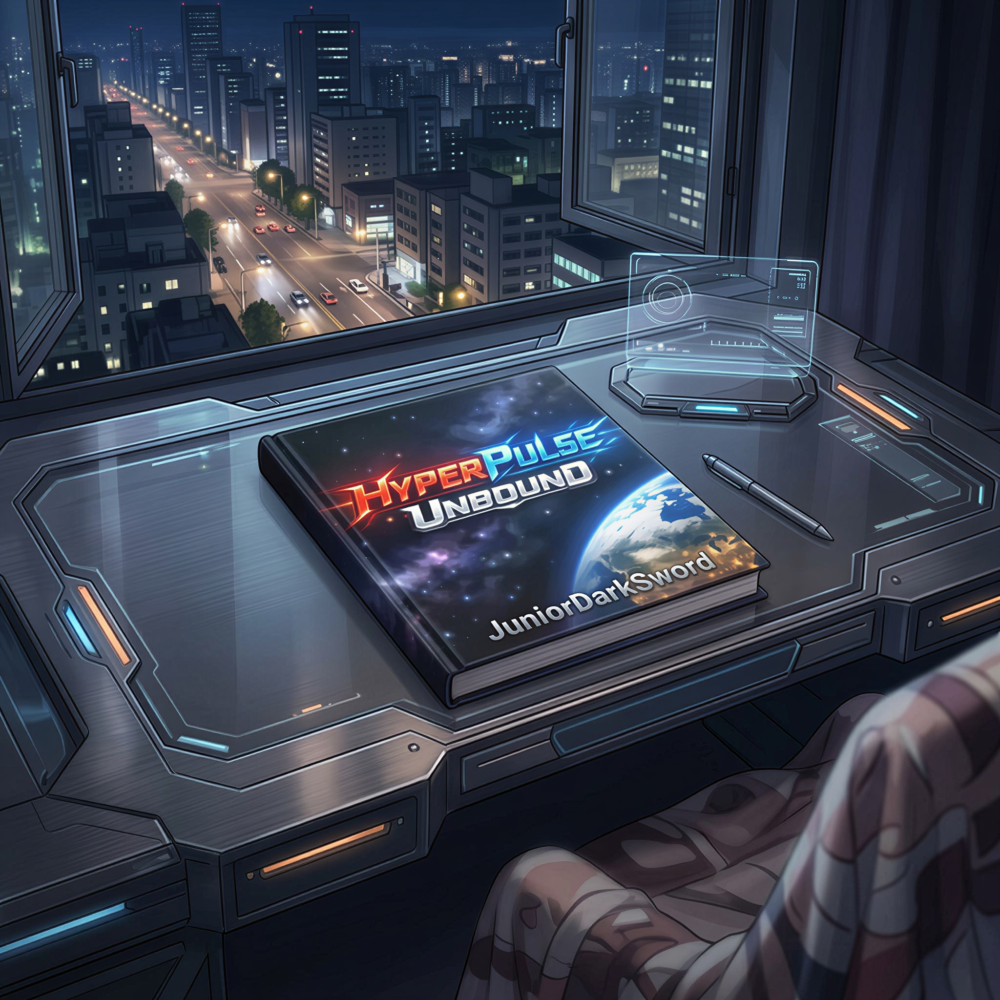

HyperPulse Unbound é uma saga de longa duração organizada em seis fases narrativas, compostas por múltiplas temporadas de 15 capítulos. Com forte influência de animes e animações ocidentais, a obra mistura ficção científica, aventura e combates intensos em uma experiência cinematográfica, unindo estilo, escala e personalidade própria. E relaxa, por mais estranho e nonsense que algum capítulo pareça, nenhum deles é filler.
Todos os capítulos da história e as biografias dos personagens foram escritos e formatados no celular. Por isso, ao abrir os PDFs no computador ou notebook, o texto pode parecer grande demais em telas maiores. Nesse caso, basta ajustar o zoom para uma leitura mais confortável.